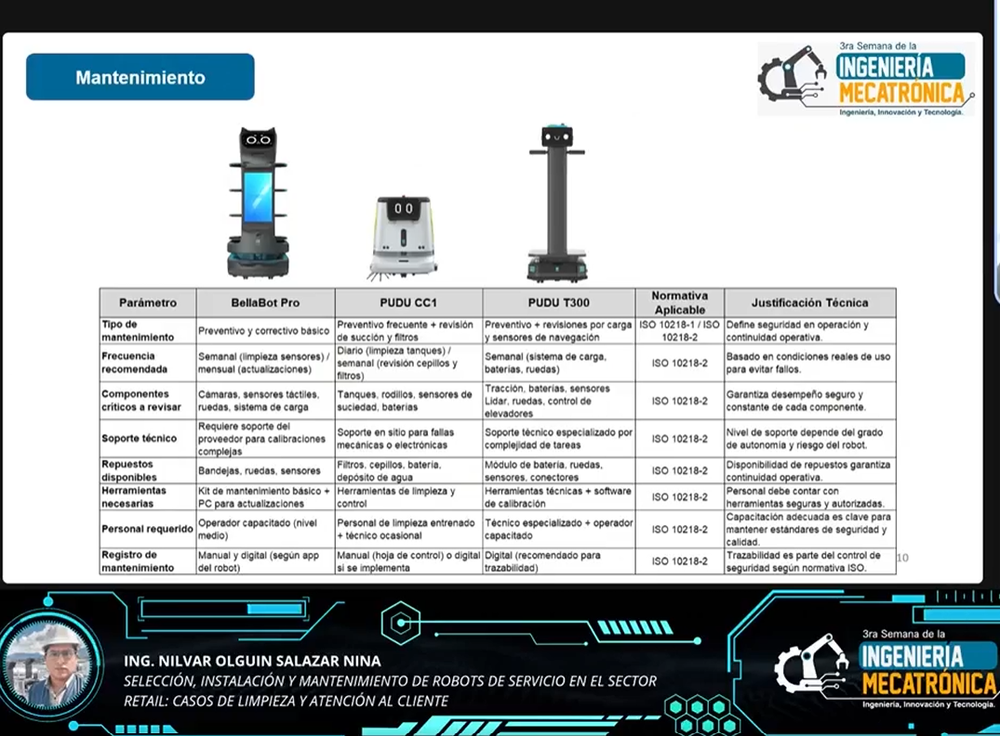
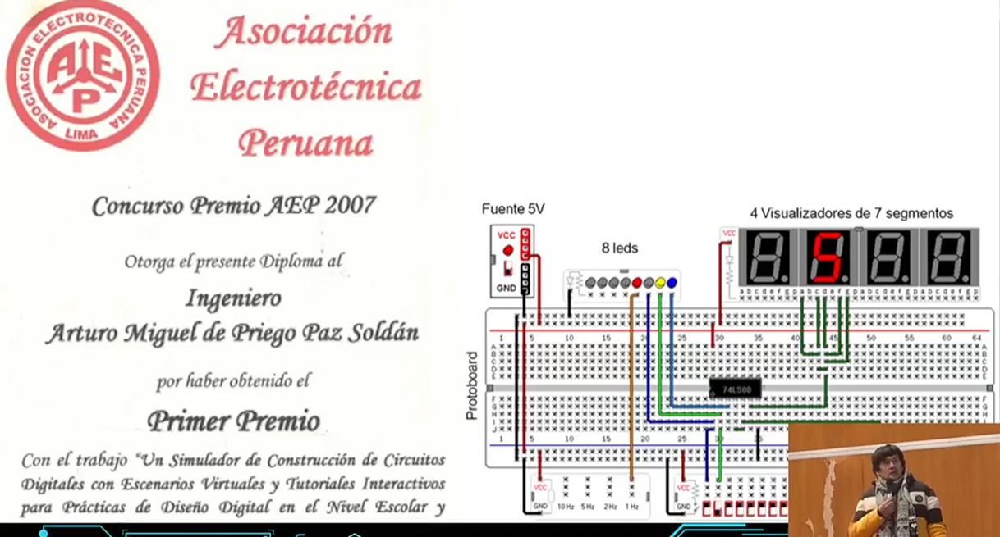

INAGURACIÓN
La ceremonia de inauguración marca el inicio de la III Semana de la Ingeniería Mecatrónica en la Universidad Nacional de Juliaca. Este evento reúne a autoridades académicas, docentes, estudiantes y profesionales invitados, con el propósito de reflexionar sobre los avances y retos de la mecatrónica en el desarrollo regional y nacional.
Durante la jornada inaugural se presentarán ponencias magistrales a cargo de destacados ingenieros expertos en el campo, quienes compartirán su conocimiento y experiencia para inspirar a las nuevas generaciones de mecatrónicos.
🎤 Ponencia Magistral: Ing. Nilvar Olguin Salazar Nina
La exposición del Ing. Nilvar Salazar Nina brindó a la comunidad académica y profesional de la Universidad Nacional de Juliaca una perspectiva clara sobre el impacto y los desafíos de implementar robots de servicio en entornos comerciales.
El ponente resaltó la importancia de una correcta selección tecnológica, considerando factores como el tipo de servicio (limpieza, logística interna, atención al cliente), las características del entorno de operación y la integración con sistemas existentes en el sector retail.
Asimismo, destacó la necesidad de establecer estrategias de mantenimiento predictivo y correctivo para prolongar la vida útil de los robots y garantizar un retorno de inversión sostenible.
Finalmente, su ponencia invitó a reflexionar sobre la urgencia de formar ingenieros mecatrónicos con competencias en diseño, programación y gestión de robots de servicio.
🎤 Ponencia Magistral: Ing. Helarf Ferrer Calsina
La ponencia del Ing. Helarf Ferrer Calsina ofreció una valiosa introducción a la comunidad estudiantil y profesional de la Universidad Nacional de Juliaca sobre el papel del IEEE (Institute of Electrical and Electronics Engineers) como una de las organizaciones más influyentes en el desarrollo de la ingeniería a nivel mundial.
El expositor destacó los múltiples beneficios de pertenecer a IEEE, entre ellos el acceso a redes globales de profesionales, recursos de aprendizaje continuo, publicaciones de alto impacto y eventos internacionales. Subrayó cómo estos recursos permiten a los estudiantes y egresados ampliar sus horizontes profesionales y estar a la vanguardia en tendencias tecnológicas como la robótica, inteligencia artificial y sistemas mecatrónicos.
Además, enfatizó las oportunidades de desarrollo profesional que IEEE brinda a través de programas de mentoría, liderazgo en capítulos estudiantiles y participación en conferencias técnicas, lo cual resulta fundamental para fortalecer las competencias blandas y técnicas de los futuros ingenieros.
Finalmente, la ponencia motivó a los asistentes a integrarse a la comunidad IEEE, considerándola una plataforma clave para potenciar su crecimiento académico y profesional, y para contribuir activamente al desarrollo tecnológico regional y nacional.

🎤 Ponencia Magistral: Ing. Arturo Javier Miguel de Priego Paz Soldán
El Ing. Arturo Javier Miguel de Priego Paz Soldán centró su ponencia en la importancia de las competencias ágiles en la formación de ingenieros, combinando enfoques de Educación STEM (Ciencia, Tecnología, Ingeniería y Matemáticas) con el desarrollo de la inteligencia emocional.
El ponente subrayó que, en un entorno laboral en constante transformación, los futuros profesionales deben ser capaces de adaptarse rápidamente a cambios tecnológicos y organizacionales. Para ello, es clave el dominio de metodologías ágiles como Scrum y Design Thinking, las cuales promueven el trabajo en equipo, la resolución creativa de problemas y la entrega continua de valor.
Además, enfatizó que la inteligencia emocional es un pilar fundamental para un liderazgo efectivo y la colaboración en entornos multidisciplinarios. Gestionar emociones, desarrollar empatía y comunicarse asertivamente son habilidades esenciales que complementan las competencias técnicas de la ingeniería moderna.
Finalmente, la ponencia animó a la comunidad universitaria a integrar estos enfoques en su formación y práctica profesional, para consolidarse como ingenieros mecatrónicos con visión integral y capacidad de innovar en contextos regionales y globales.
